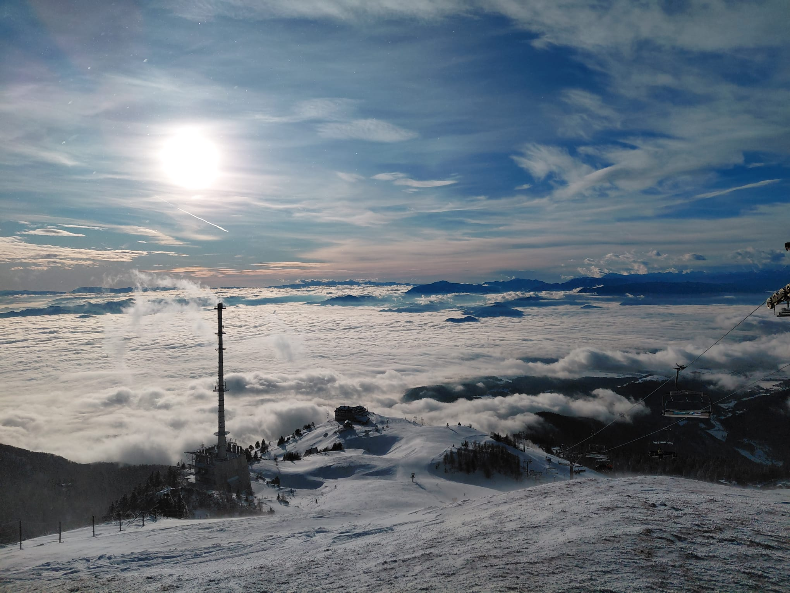
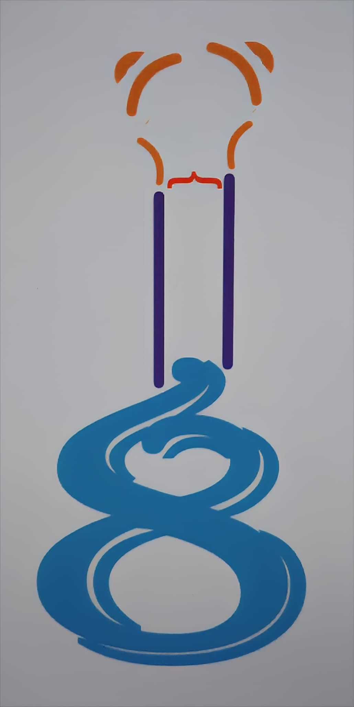
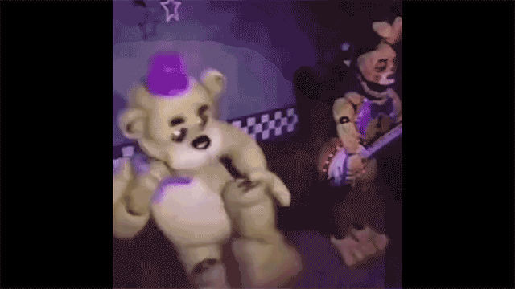
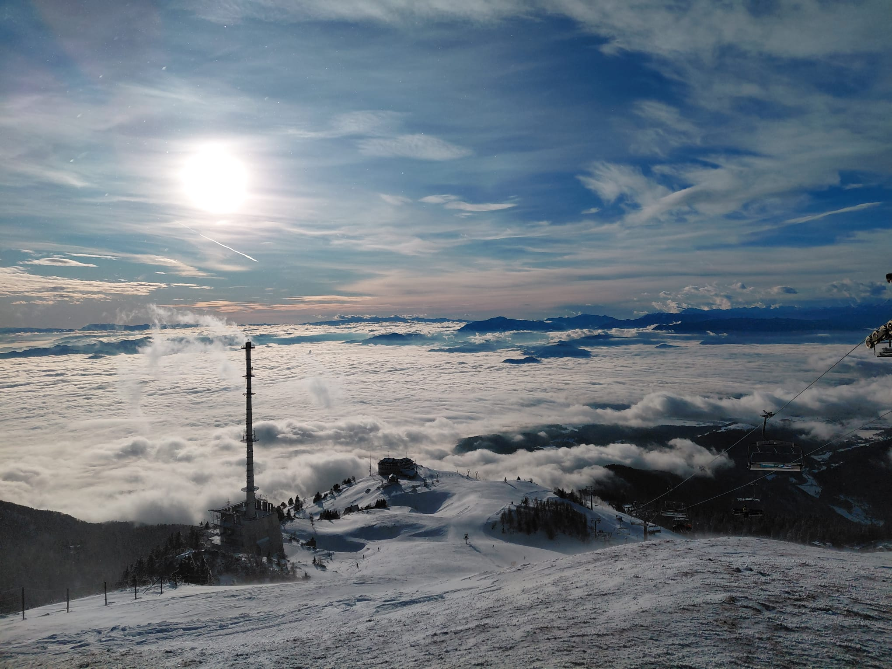
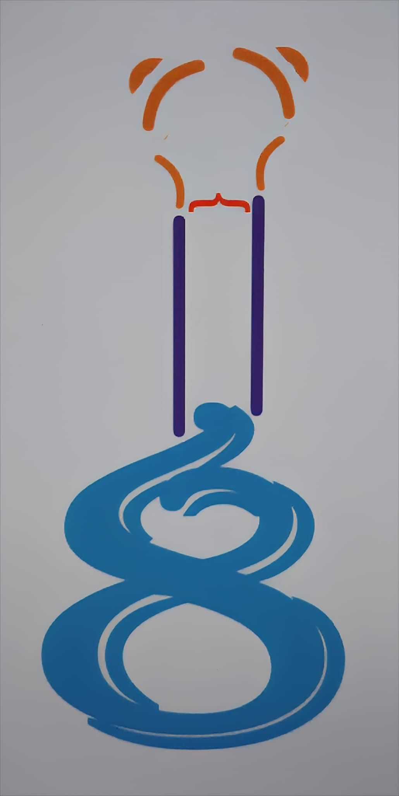
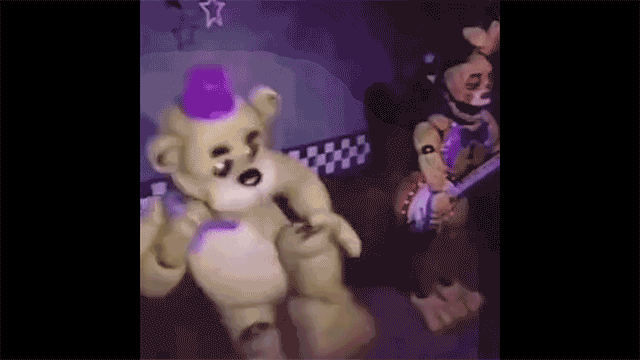

Ukratko o sebi: Zovem se Vučak Paško. Ja sam entuzijast digitalne multimedije s izraženim interesom za spoj kreativnog izražavanja i tehničkog istraživanja. Moja svakodnevica balansira između discipline potrebne za savladavanje glazbenih instrumenata i analitičke znatiželje usmjerene prema razumijevanju svijeta. Slobodno vrijeme posvećujem sviranju gitare, od učenja i izvođenja pjesama do njihovog presnimavanja i montaže. Fasciniran sam znanošću i poviješću. Redovito pratim platforme poput Veritasiuma kako bih dublje razumio zakone fizike i kompleksne mehanizme koji pokreću naš svijet. Ljubitelj sam naslova s dubokom pričom i kompleksnim sustavima, poput serijala God of War, Diablo II i Death Stranding. Kroz te igre, kao i kroz kompetitivni League of Legends, razvijam strateško razmišljanje, strpljenje i fokus na detalje – osobine koje primjenjujem u svakom projektu kojeg se prihvatim.
 




